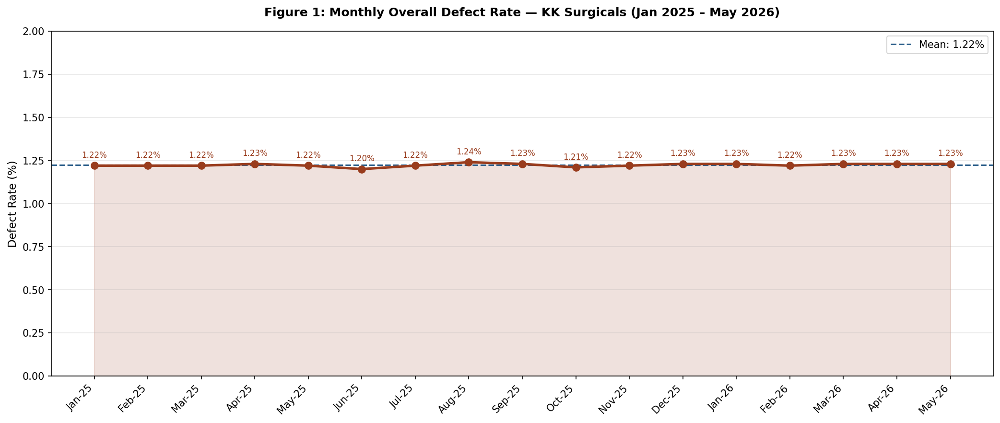
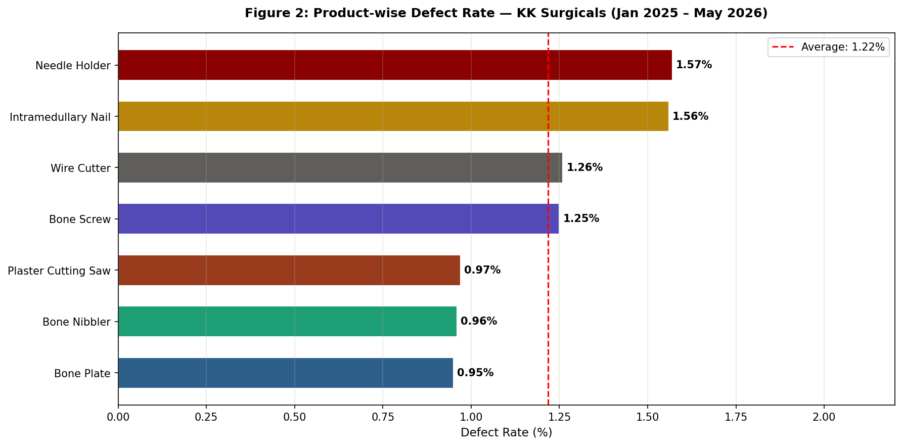
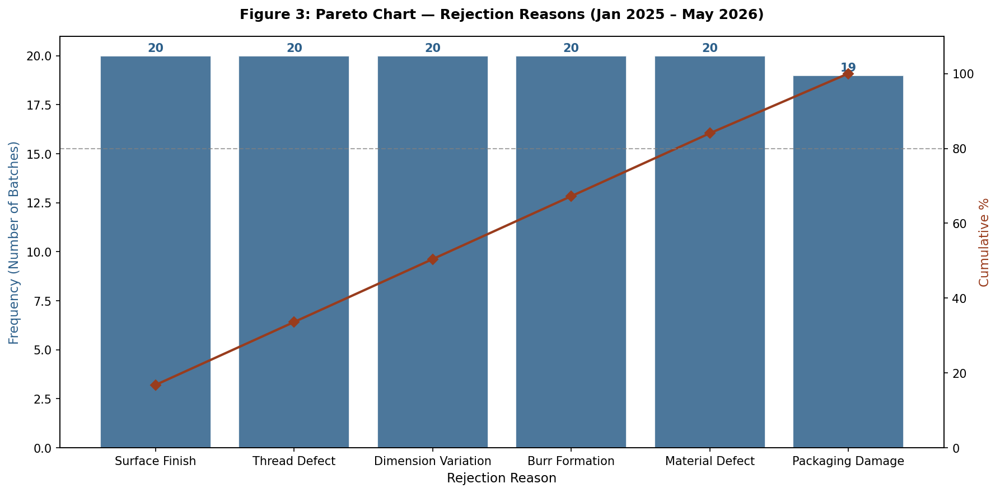
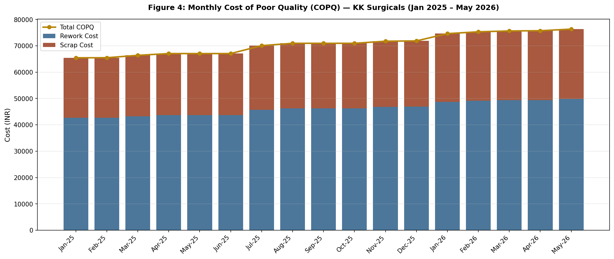
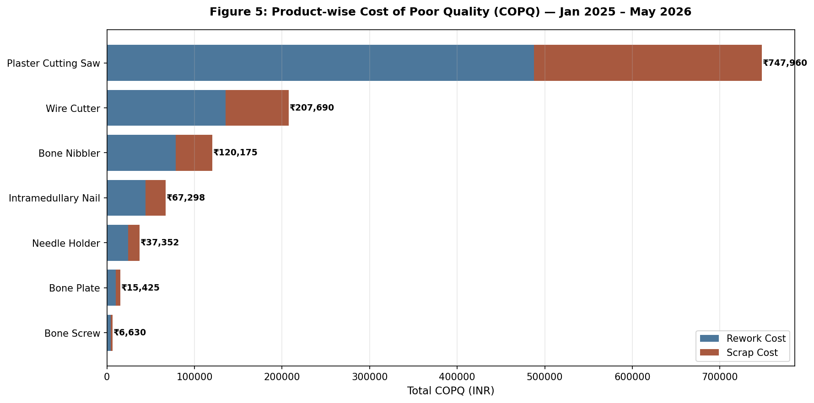
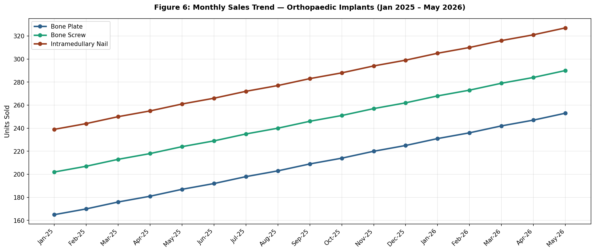
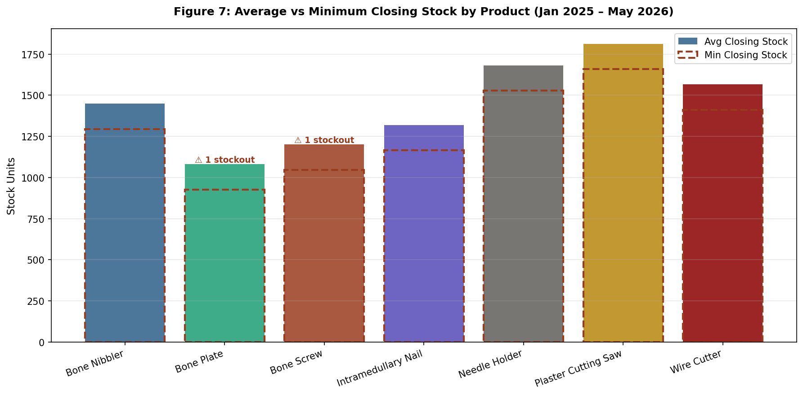

An end-to-end industrial data engineering and operations research audit for an established ISO/CE-certified medical equipment manufacturing firm. Audited 17 months of factory floor registers, resolved a counter-intuitive ₹12.02 Lakhs Cost of Poor Quality (COPQ) paradox via One-Way ANOVA, and engineered a dynamic EOQ–ROP–ARIMA supply chain synchronization framework.
Click on any operational dimension below to reveal the empirical 5-Whys root-cause chain identified during on-site plant floor audits.
All figures generated directly from primary batch records via Python (Matplotlib, SciPy, Statsmodels) without external interpolation.







Simulate live operational trade-offs between defect reduction, supplier lead times, service levels, and recoverable working capital.
Under a 15-day supplier lead time and 95% service level, whenever inventory on hand drops to 275 units, an automatic production batch of 46 units is triggered. This maintains a 62-unit buffer, eliminating stockouts while recovering ₹2,61,786 annually in avoidable quality loss.
Parametric hypothesis testing, time-series differencing, and statistical process control derivations.
Empirical Result: $F = 38.42,\; p = 1.48 \times 10^{-24} \ll 0.001$. Confirms product COPQ differences are statistically non-random.
Parameters: $S = \text{₹}500/\text{order}$, $H = 20\% \times \text{Unit Cost}$, $Z = 1.65$ (95% Service Level), $L = 15\text{ Days}$.
Constants for $n=7$: $A_2 = 0.419, D_3 = 0.076, D_4 = 1.924$. Center line $\bar{\bar{X}} = 15.67$, $\bar{R} = 10.41$.
First-Order Differencing ($d=1$): Transformed non-stationary upward sales trends ($R^2 > 0.80$) into stationary residuals.
Filter, search, and audit 17 months of batch manufacturing data with real-time aggregated metrics.
| Month | Product SKU | Units Produced | Units Rejected | Defect Rate (%) | Rejection Reason | Unit Cost (₹) | Rework Cost (₹) | Scrap Cost (₹) | Total COPQ (₹) | Closing Stock | Stockout? |
|---|
Switch between the production-grade script (482 lines) and the interactive Jupyter notebook used for verification.
"""
Medical Equipment Firm — Surgical Implants Quality & Inventory Optimization
Chart Generation and Statistical Analysis Script
Author: Kushal Batra (IIT Madras BS in Data Science & Applications)
Purpose: Reproduces all 10 figures and statistical test results (T-test,
ANOVA, correlation, ARIMA forecast, SPC control limits).
Reads directly from primary-data Excel file.
Permitted Libraries: pandas, numpy, matplotlib, scipy, statsmodels
"""
import os
import warnings
import numpy as np
import pandas as pd
import matplotlib
matplotlib.use("Agg")
import matplotlib.pyplot as plt
from matplotlib.patches import Patch
from scipy import stats
from statsmodels.tsa.arima.model import ARIMA
warnings.filterwarnings("ignore")
# ----------------------------------------------------------------------
# 1. LOAD AND CLEAN PRIMARY DATASET
# ----------------------------------------------------------------------
RAW_DATA_PATH = "Raw_Data_Medical_Equipment_Firm.xlsx"
df = pd.read_excel(RAW_DATA_PATH)
df["Months_date"] = pd.to_datetime(df["Months_date"])
# Derived Operational Variables
df["Defect_Rate"] = (df["Units_Rejected"] / df["Units_Produced"]) * 100
df["COPQ"] = df["Rework_Cost_INR"] + df["Scrap_Cost_INR"]
# Automated Quality Assertions
assert df.isnull().sum().drop(labels=["Stockout_Incident"], errors="ignore").sum() == 0, "Missing values detected"
assert (df["Units_Rejected"] <= df["Units_Produced"]).all(), "Units_Rejected exceeds Units_Produced"
# ----------------------------------------------------------------------
# 2. PILLAR 1 — DEFECT TREND & SPC CONTROL CHARTS
# ----------------------------------------------------------------------
monthly_defect = df.groupby("Months_date").apply(
lambda g: g["Units_Rejected"].sum() / g["Units_Produced"].sum() * 100
)
x = np.arange(len(monthly_defect))
slope, intercept, r_val, p_val, std_err = stats.linregress(x, monthly_defect.values)
print(f"Defect Trend Slope: {slope:.5f}%/month (p-value: {p_val:.4e})")
# SPC Constants for Subgroup n=7
A2, D3, D4 = 0.419, 0.076, 1.924
spc_monthly = df.groupby("Months_date")["Units_Rejected"].agg(["mean", "max", "min"])
spc_monthly["range"] = spc_monthly["max"] - spc_monthly["min"]
xbar_grand = spc_monthly["mean"].mean()
rbar = spc_monthly["range"].mean()
UCL_x = xbar_grand + A2 * rbar
LCL_x = max(0, xbar_grand - A2 * rbar)
UCL_r = D4 * rbar
LCL_r = D3 * rbar
# ----------------------------------------------------------------------
# 3. PILLAR 2 — COPQ MODELING & ONE-WAY ANOVA
# ----------------------------------------------------------------------
# One-Way ANOVA across 7 Product Lines
groups_copq = [df[df["Product"] == p]["COPQ"].values for p in df["Product"].unique()]
f_stat_copq, p_val_copq = stats.f_oneway(*groups_copq)
print(f"ANOVA COPQ Test: F = {f_stat_copq:.2f}, p = {p_val_copq:.5e}")
# Pearson Correlation: COPQ vs Unit Cost vs Defect Rate
r_cost, p_cost = stats.pearsonr(df["Unit_Cost_INR"], df["COPQ"])
r_defect, p_defect = stats.pearsonr(df["Defect_Rate"], df["COPQ"])
print(f"COPQ vs Unit Cost: r = {r_cost:.3f} (p = {p_cost:.5e})")
print(f"COPQ vs Defect Rate: r = {r_defect:.3f} (p = {p_defect:.5e})")
# ----------------------------------------------------------------------
# 4. PILLAR 3 — ABC CLASSIFICATION, EOQ, ROP & ARIMA FORECASTING
# ----------------------------------------------------------------------
prod_sales = df.groupby("Product").agg(
AvgMonthlySales=("Sales_Qty", "mean"), UnitCost=("Unit_Cost_INR", "first")
)
prod_sales["AnnualDemand"] = prod_sales["AvgMonthlySales"] * 12
prod_sales["AnnualValue"] = prod_sales["AnnualDemand"] * prod_sales["UnitCost"]
# EOQ and Safety Stock Calculations (Z = 1.65 for 95% Service Level, L = 15 Days)
S = 500
H_RATE = 0.20
Z = 1.65
LEAD_TIME_DAYS = 15
prod_sales["H"] = prod_sales["UnitCost"] * H_RATE
prod_sales["EOQ"] = np.sqrt((2 * prod_sales["AnnualDemand"] * S) / prod_sales["H"])
daily_demand = prod_sales["AnnualDemand"] / 365
monthly_std = df.groupby("Product")["Sales_Qty"].std()
daily_std = monthly_std / np.sqrt(30)
prod_sales["SafetyStock"] = Z * daily_std.reindex(prod_sales.index) * np.sqrt(LEAD_TIME_DAYS)
prod_sales["ROP"] = (daily_demand * LEAD_TIME_DAYS) + prod_sales["SafetyStock"]
# ARIMA(2,1,0) Sales Forecast
for product in ["Bone Plate", "Bone Screw"]:
sub = df[df["Product"] == product].sort_values("Months_date")
series = pd.Series(sub["Sales_Qty"].values, index=pd.DatetimeIndex(sub["Months_date"].values, freq="MS"))
fit = ARIMA(series, order=(2, 1, 0)).fit()
forecast = fit.get_forecast(steps=3)
print(f"ARIMA 3-Month Forecast for {product}: {forecast.predicted_mean.round(0).values}")
Translating mathematical findings into prioritized industrial interventions.
Implement standardized daily torque and tool-offset calibration checklists on CNC milling stations before morning and night shifts to halt progressive defect drift.
Triage quality control by financial risk rather than unit volume. Deploy multi-stage inspection checkpoints specifically on Plaster Cutting Saw and Wire Cutter lines.
Transition from experience-based replenishment to parameterized dynamic ROP buffers linked with 3-month forward ARIMA demand projections.